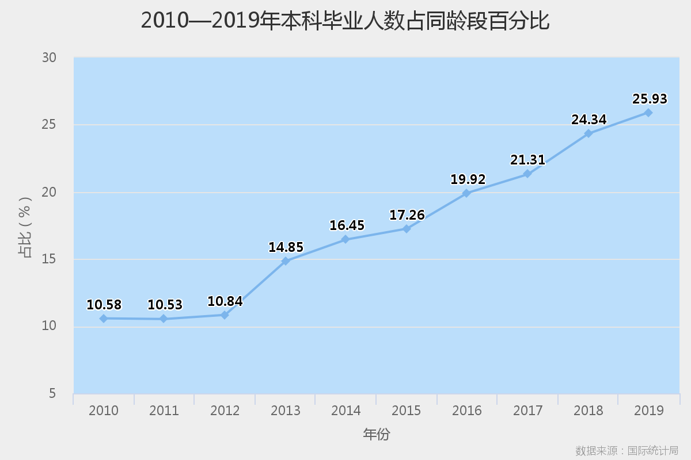

中国拥有本科学历的人有多少？
经过国家统计局的数据，截止到2019年，本科毕业生数目约占我国总人口数的3.8%。从1977年恢复高考到2019年，我国共有38届本科生顺利毕业，累计毕业人数约为5330.9万人。
随着国家经济实力的上升，近年来的本科入学率与毕业率增长变快，毕业人数基数增大。以下是近十年来普通本科毕业人数的统计情况。
我国在2019年末总人口数为14.0005亿，那么本科学历人数占比应为3.8%。但是，和你在同一个赛道竞争的绝不是大部分国人，而是你的同龄人。因此，我们分析了本科毕业人数在同龄人数所占百分比。
对2010~2019年毕业的本科生做个分析：我们以本科毕业年龄为22岁，那么在2010~2019年的毕业的本科生，在2010年为13~22岁。假设并且希望这十年出生的孩子并没发生什么意外，都还开心快乐地活着，那么这十年来占比如下

说实话，算出来这个数据让我们也感到焦虑，占比逐年增加，我们00后的占比以后更高，以后的同龄段人群中，每四个人必有一个本科毕业生。这样的话，大家还会觉得学历不重要吗？